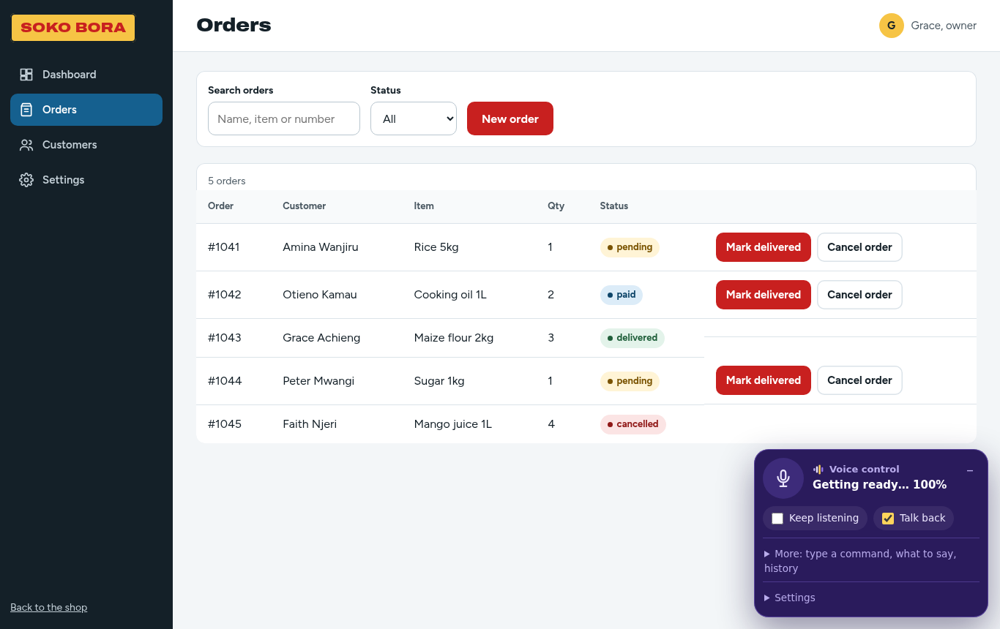

How to use a website by voice
A short guide to Wezesha's voice commands, from opening pages to filling in forms and having the page read to you.
This guide walks through the commands you can use today. Try them on this page: everything here is made of headings, lists and links, so it is a good place to practise.
Starting and stopping
- Press the round microphone button, or press Alt and V together.
- Say what you want. Wezesha listens until you stop talking.
- To keep it listening all the time, tick Keep listening. Then start each command with the wake word, “computer”.
After a command it keeps listening for 15 seconds, so you can say the next thing without the wake word. Say “go to sleep” to make it wait for the wake word again, or “stop listening” to turn the microphone off.
What the microphone is telling you
The round button changes colour, and the words next to it say the same thing:
| Colour | Words | What to do |
|---|---|---|
| Grey | Mic off | Press it, or Alt and V, to start |
| Blue | Say “computer” first | Start with the wake word |
| Yellow | Speak now · 12 s | Just talk; no wake word needed for a few seconds |
| Green | Hearing you / Listening | Keep talking |
| Purple | Working… | Wait a moment |
| Pink | Talking · say “stop” | Say “stop” to make it stop |
When you don’t know what to say
Say “menu”. A numbered list of everything you can do on the page appears, and you just say the number. Say “more” for the next part of the list, and “close” or “cancel” to close it. If Wezesha does not understand you, it tells you to say “menu”.
The voice panel
- “Minimize” makes the panel small; what you say still shows next to it, so you can see if it heard you wrong. “Expand” opens it again, or tap the small arrow.
- “Drag the microphone up”, “down”, “left” or “right”, with “a bit” or “a lot”, or “move the microphone to the top left”. You can also drag it with your finger or mouse. It stays where you put it.
Moving around a page
- “Open the shop”, “go to contact us”: opens a link or button by its name.
- “Scroll down”, “go to the top”.
- “Go back”.
- “Show numbers”, then “number 7”: every clickable thing gets a number, for when a button has no clear name.
Having the page read to you
- “Read the page” reads from the top. “Stop” or the Escape key stops it.
- “Read this section” reads from the heading above you to the next one.
- “Next heading”, “previous heading”, “next paragraph”, “next link”.
- “Where am I” tells you the page and the section you are in.
- “List headings” reads all the headings, so you can decide where to go.
- “Faster” and “slower” change the reading speed.
Filling in forms
- “My name is Mary Atieno” fills in the name box.
- “Type 0712 345 678 in phone number”.
- Say the name of a box, like “message”, and then just talk: what you say is typed in. Say “done” when you finish.
- “Delete that” takes back the last thing typed. “Spell J O H N” types letters.
- Email addresses work as you would say them: “mary dot atieno at gmail dot com”.
Wezesha never types passwords by voice, because people nearby would hear them. Use a passkey instead; see Signing in without saying your password.
Doing things safely
Before it pays, checks out, sends a form or deletes something, Wezesha asks you to say “yes”. Say “no” and nothing happens.

In apps that teach Wezesha their own actions you can say things like “show pending orders” or “cancel order 1042”, and it asks before cancelling.
Making it fit you
Open Settings in the voice panel, or say “settings”:
| Setting | What it does |
|---|---|
| Wake word | Use your own word instead of “computer”. Or say “change the wake word to Wezesha”. |
| Wait before acting | A longer pause gives you more time to finish speaking. Or say “longer pause”. |
| Switch key | Use one key, or a switch device, in place of the microphone button. |
| Switch scanning | Press your switch to move from button to button; press twice to choose. |